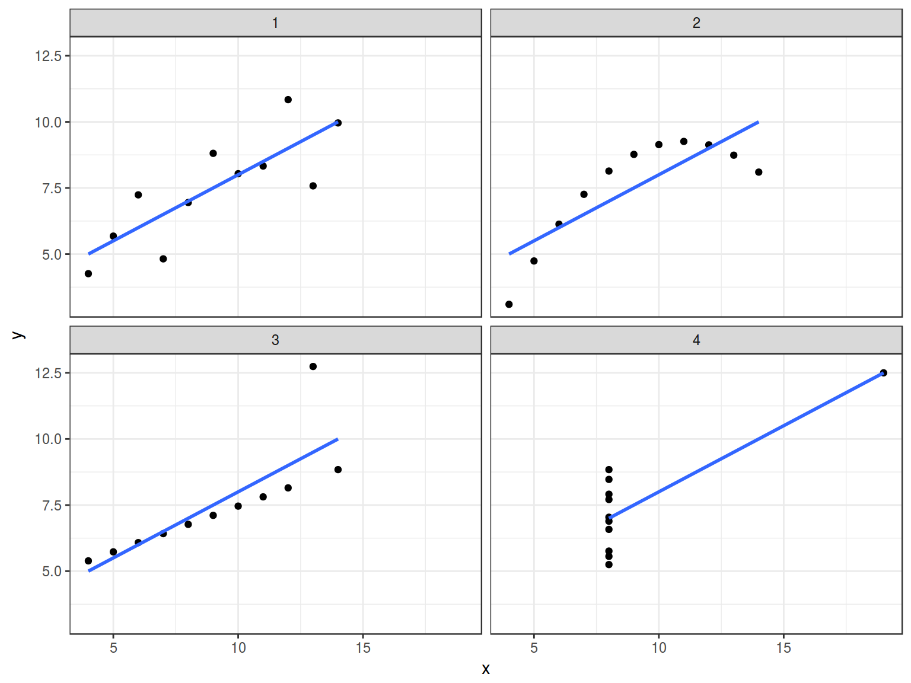
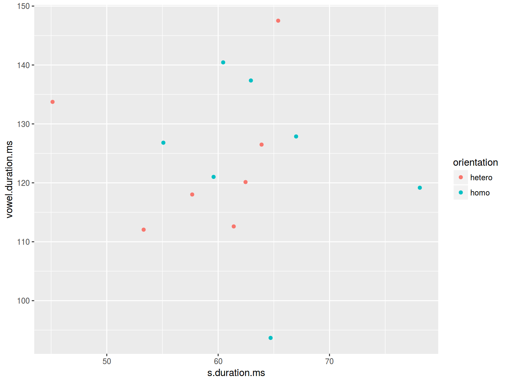
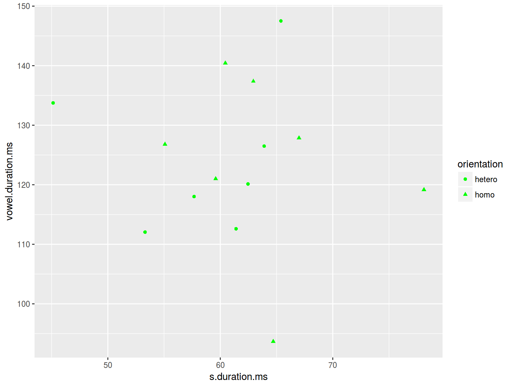
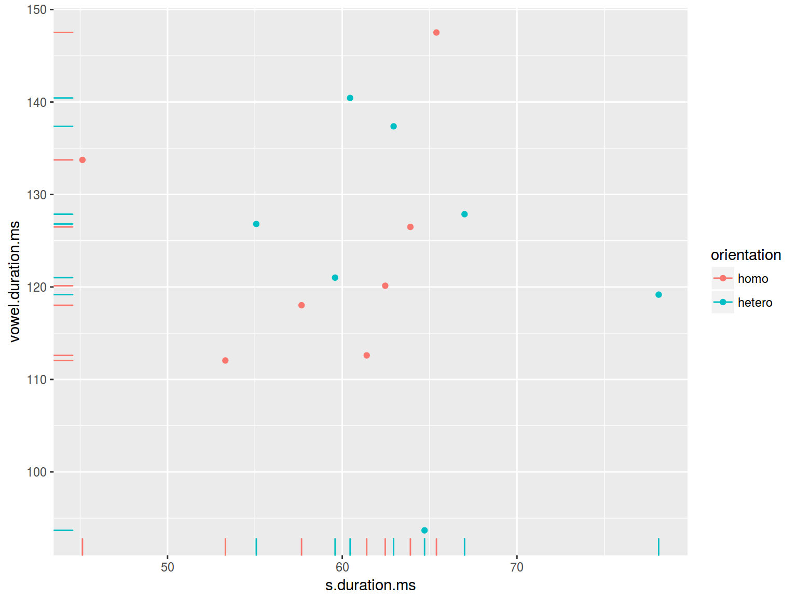
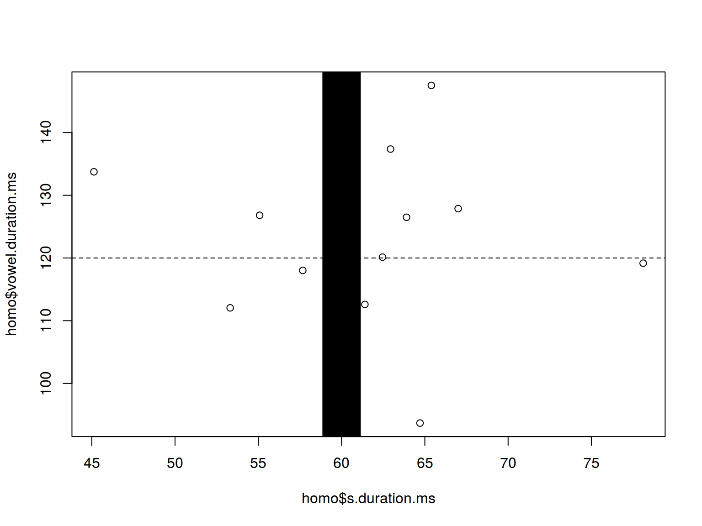
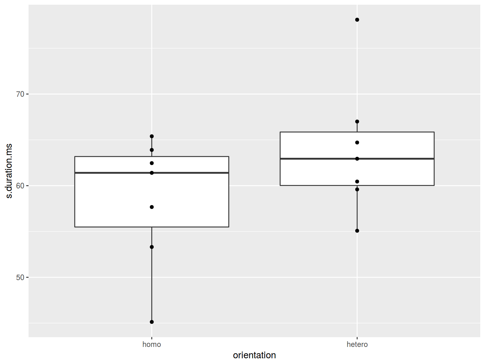

Data manipulation and visualization
tidyverse: dplyr, tidyr, ggplot2
02.02.2017
1.1 Data Types
## [1] 42 99 43
matrix(1:12, nrow=3,ncol=4)
## [,1] [,2] [,3] [,4]
## [1,] 1 4 7 10
## [2,] 2 5 8 11
## [3,] 3 6 9 12
list(
n_lectures = 12,
l_topics = c("begining", "data manipulation", "descriptive stats"),
h_topics = c("data manipulations", "descriptive stats")
)
## $n_lectures
## [1] 12
##
## $l_topics
## [1] "begining" "data manipulation" "descriptive stats"
##
## $h_topics
## [1] "data manipulations" "descriptive stats"
data.frame(
names = c("Olya", "Ilya", "Sasha", "George"),
lecturer = c(TRUE, TRUE, FALSE, TRUE),
lecturer_experience = c(19, 6, 0, 3)
)
See Data Type Conversion page
1.2 Data Frame exploration
There are some embedded data frames (e. g. mtcars, cars, iris). How many rows and columns?
nrow(iris) # returns the number of rows
## [1] 150
ncol(mtcars) # returns the number of columns
## [1] 11
head(cars) # returns the first 6 rows
head(cars, 4) # returns the first 4 rows
tail(cars) # returns the last 6 rows
summary(cars) # produce some stats
## speed dist
## Min. : 4.0 Min. : 2.00
## 1st Qu.:12.0 1st Qu.: 26.00
## Median :15.0 Median : 36.00
## Mean :15.4 Mean : 42.98
## 3rd Qu.:19.0 3rd Qu.: 56.00
## Max. :25.0 Max. :120.00
str(cars) # shows the structure: variables, their type
## 'data.frame': 50 obs. of 2 variables:
## $ speed: num 4 4 7 7 8 9 10 10 10 11 ...
## $ dist : num 2 10 4 22 16 10 18 26 34 17 ...
1.3 Data Frame Indexing
mtcars$mpg # shows the mpg vector
## [1] 21.0 21.0 22.8 21.4 18.7 18.1 14.3 24.4 22.8 19.2 17.8 16.4 17.3 15.2
## [15] 10.4 10.4 14.7 32.4 30.4 33.9 21.5 15.5 15.2 13.3 19.2 27.3 26.0 30.4
## [29] 15.8 19.7 15.0 21.4
mtcars[3,7] # shows the 3. row, 7. column
## [1] 18.61
mtcars[3,] # shows the 3. row
mtcars[,7] # shows the 7. column
## [1] 16.46 17.02 18.61 19.44 17.02 20.22 15.84 20.00 22.90 18.30 18.90
## [12] 17.40 17.60 18.00 17.98 17.82 17.42 19.47 18.52 19.90 20.01 16.87
## [23] 17.30 15.41 17.05 18.90 16.70 16.90 14.50 15.50 14.60 18.60
mtcars[mtcars$mpg < 20, ] # show all rows with the mpg value lower then 20
2. Tidyverse
The tidyverse is a set of packages:
- dplyr, for data manipulation
- ggplot2, for data visualisation
- tidyr, for data tidying
- readr, for data import
- purrr, for functional programming
- tibble, for tibbles, a modern re-imagining of data frames
Install tidyverse package using install.packages(“tidyverse”)
Load tidyverse package
In this presentation the folowing version of tideverse, dplyr and ggplot2 are used:
packageVersion("tidyverse")
## [1] '1.1.1'
## [1] '0.5.0'
packageVersion("ggplot2")
## [1] '2.2.1'
3.1 Join dataframe by row or column
my_data_1 <- mtcars[5:20,] # select a subset of mtcars
my_data_2 <- mtcars[17:29,] # select a subset of mtcars
combine_rows <- rbind.data.frame(my_data_1, my_data_2)
nrow(my_data_1); nrow(my_data_2); nrow(combine_rows)
## [1] 16
## [1] 13
## [1] 29
my_data_3 <- mtcars[,3:7] # select a subset of mtcars
my_data_4 <- mtcars[,6:11] # select a subset of mtcars
combine_cols <- cbind.data.frame(my_data_3, my_data_4)
ncol(my_data_3); ncol(my_data_4); ncol(combine_cols)
## [1] 5
## [1] 6
## [1] 11
3.2 Joins (dplyr)
languages <- data.frame(
languages = c("Selkup", "French", "Chukchi", "Kashubian"),
countries = c("Russia", "France", "Russia", "Poland"),
iso = c("sel", "fra", "ckt", "pol")
)
languages
country_population <- data.frame(
countries = c("Russia", "Poland", "Finland"),
population_mln = c(143, 38, 5))
country_population
inner_join(languages, country_population)
## Joining, by = "countries"
## Warning in inner_join_impl(x, y, by$x, by$y, suffix$x, suffix$y): joining
## factors with different levels, coercing to character vector
left_join(languages, country_population)
## Joining, by = "countries"
## Warning in left_join_impl(x, y, by$x, by$y, suffix$x, suffix$y): joining
## factors with different levels, coercing to character vector
right_join(languages, country_population)
## Joining, by = "countries"
## Warning in right_join_impl(x, y, by$x, by$y, suffix$x, suffix$y): joining
## factors with different levels, coercing to character vector
anti_join(languages, country_population)
## Joining, by = "countries"
anti_join(country_population, languages)
## Joining, by = "countries"
full_join(country_population, languages)
## Joining, by = "countries"
## Warning in full_join_impl(x, y, by$x, by$y, suffix$x, suffix$y): joining
## factors with different levels, coercing to character vector
3.3 Data
The majority of examples in that presentation are based on Chi-kuk 2007. Experiment consisted of a perception and judgment test aimed at measuring the correlation between acoustic cues and perceived sexual orientation. Naïve Cantonese speakers were asked to listen to the Cantonese speech samples collected in Experiment and judge whether the speakers were gay or heterosexual. There are 14 speakers and following parameters:
- [s] duration (s.duration.ms)
- vowel duration (vowel.duration.ms)
- fundamental frequencies mean (F0) (average.f0.Hz)
- fundamental frequencies range (f0.range.Hz)
- percentage of homosexual impression (perceived.as.homo)
- percentage of heterosexal impression (perceived.as.hetero)
- speakers orientation (orientation)
- speakers age (age)
Download data
homo <- read.csv("http://goo.gl/Zjr9aF")
homo
3.4 Data Frame → Tibble (dplyr)
Tibble is a useful modification of Data Frame.
library(tidyverse)
homo <- tbl_df(homo)
homo
3.5 Filter (dplyr)
How many speakers are older than 28?
homo %>%
filter(age > 28, s.duration.ms < 60)
%>% is called pipe. Pipe is a technique for passing result of the work of one function to another.
sort(sqrt(abs(sin(1:22))), decreasing = TRUE)
## [1] 0.9999951 0.9952926 0.9946649 0.9805088 0.9792468 0.9554817 0.9535709
## [8] 0.9173173 0.9146888 0.8699440 0.8665952 0.8105471 0.8064043 0.7375779
## [15] 0.7325114 0.6482029 0.6419646 0.5365662 0.5285977 0.3871398 0.3756594
## [22] 0.0940814
1:22 %>%
sin() %>%
abs() %>%
sqrt() %>%
sort(., decreasing = TRUE) # dot here shows where should argument be
## [1] 0.9999951 0.9952926 0.9946649 0.9805088 0.9792468 0.9554817 0.9535709
## [8] 0.9173173 0.9146888 0.8699440 0.8665952 0.8105471 0.8064043 0.7375779
## [15] 0.7325114 0.6482029 0.6419646 0.5365662 0.5285977 0.3871398 0.3756594
## [22] 0.0940814
Pipes in tidyverse package came from magritr package. Sometimes it works incorrectly with not tidyverse functions.
3.7 Select (dplyr)
homo %>%
select(speaker:average.f0.Hz)
3.8 arrange (dplyr)
homo[order(homo$orientation, homo$age), ]
homo %>%
arrange(orientation, desc(age))
3.9 distinct
## [1] hetero homo
## Levels: hetero homo
homo %>%
distinct(orientation, age > 20)
unique(homo[c("orientation", "perceived.as.homo")])
homo %>%
distinct(orientation, perceived.as.homo)
3.10 mutate (dplyr)
homo$f0.min <- homo$average.f0.Hz - homo$f0.range.Hz/2
homo$f0.min
## [1] 93.26 43.29 63.30 97.21 112.06 129.79 69.86 77.41 61.66 68.05
## [11] 75.68 117.30 105.09 102.78
homo$f0.max <- homo$average.f0.Hz + homo$f0.range.Hz/2
homo$f0.max
## [1] 145.76 157.29 166.50 156.01 149.46 171.79 188.06 133.11 158.06 179.75
## [11] 163.28 175.10 205.59 140.18
homo %>%
mutate( f0.mn = average.f0.Hz - f0.range.Hz/2,
f0.mx = (average.f0.Hz + f0.range.Hz/2)) ->
homo
homo
3.11 group_by and summarise (dplyr)
homo %>%
summarise(min(age), mean(s.duration.ms))
homo %>%
group_by(orientation) %>%
summarise(my_mean = mean(s.duration.ms))
homo %>%
group_by(orientation) %>%
summarise(mean(s.duration.ms))
homo %>%
group_by(orientation) %>%
summarise(mean_by_orientation = mean(s.duration.ms))
4.1. tidyr package
df.short <- data.frame(
consonant = c("stops", "fricatives", "affricates", "nasals"),
initial = c(123, 87, 73, 7),
intervocal = c(57, 77, 82, 78),
final = c(30, 69, 12, 104))
df.short
5. Anscombe’s quartet
In Anscombe, F. J. (1973). “Graphs in Statistical Analysis” was presented the next sets of data:
quartet <- read.csv("https://goo.gl/KHQLZI")
head(quartet)
sapply(quartet[, 1:4*2-1], mean)
## X1 X2 X3 X4
## 9 9 9 9
sapply(quartet[, 1:4*2], mean)
## Y1 Y2 Y3 Y4
## 7.500909 7.500909 7.500000 7.500909
sapply(quartet[, 1:4*2-1], sd)
## X1 X2 X3 X4
## 3.316625 3.316625 3.316625 3.316625
sapply(quartet[, 1:4*2], sd)
## Y1 Y2 Y3 Y4
## 2.031568 2.031657 2.030424 2.030579
mapply(cor, quartet[, 1:4*2-1], quartet[, 1:4*2])
## X1 X2 X3 X4
## 0.8164205 0.8162365 0.8162867 0.8165214
mapply(function(x, y){
lm(y~x)$coefficients},
quartet[, 1:4*2-1],
quartet[, 1:4*2])
## X1 X2 X3 X4
## (Intercept) 3.0000909 3.000909 3.0024545 3.0017273
## x 0.5000909 0.500000 0.4997273 0.4999091
6.1 Scaterplot
plot(homo$s.duration.ms, homo$vowel.duration.ms)

ggplot(data = homo, aes(s.duration.ms, vowel.duration.ms)) +
geom_point()

homo %>%
ggplot(aes(average.f0.Hz, age))+
geom_smooth(method = "lm")+
geom_point(aes(color = orientation))
6.1.1 Scaterplot: color
plot(homo$s.duration.ms, homo$vowel.duration.ms,
col = c("red", "blue")[homo$orientation])

homo %>%
ggplot(aes(s.duration.ms, vowel.duration.ms,
color = orientation)) +
geom_point()
6.1.2 Scaterplot: shape
plot(homo$s.duration.ms, homo$vowel.duration.ms,
pch = c(16, 17)[homo$orientation])

## Warning in plot.xy(xy, type, ...): не разработанное pch-значение '26'
## Warning in plot.xy(xy, type, ...): не разработанное pch-значение '27'
## Warning in plot.xy(xy, type, ...): не разработанное pch-значение '28'
## Warning in plot.xy(xy, type, ...): не разработанное pch-значение '29'
## Warning in plot.xy(xy, type, ...): не разработанное pch-значение '30'
## Warning in plot.xy(xy, type, ...): не разработанное pch-значение '31'
homo %>%
ggplot(aes(s.duration.ms, vowel.duration.ms,
shape = orientation)) +
geom_point(color = "green")

6.1.3 Scaterplot: size
plot(homo$s.duration.ms, homo$vowel.duration.ms,
cex = homo$age/20)

plot(homo$s.duration.ms, homo$vowel.duration.ms,
cex = homo$age)

homo %>%
ggplot(aes(s.duration.ms, vowel.duration.ms,
size = age)) +
geom_point()

6.1.4 Scaterplot: text
plot(homo$s.duration.ms, homo$vowel.duration.ms,
pch = c("⚤", "⚣")[homo$orientation])
levels(homo$orientation) <- c("⚣", "⚤")
homo %>%
ggplot(aes(s.duration.ms, vowel.duration.ms, label = orientation, fill = orientation)) +
geom_label()

6.1.5 Scaterplot: title
plot(homo$s.duration.ms, homo$vowel.duration.ms,
main = "length of [s] vs. length of vowels")

homo %>%
ggplot(aes(s.duration.ms, vowel.duration.ms)) +
geom_point()+
labs(title = "length of [s] vs. length of vowels",
subtitle = "based on 14 speakers of Cantonese",
caption = "data from [Chi kuk 2007]")+
ggtitle("It looks nice!")

6.1.6 Scaterplot: axis
plot(homo$s.duration.ms, homo$vowel.duration.ms,
xlab = "duration of [s] in ms", ylab = "vowel duration in ms")
homo %>%
ggplot(aes(s.duration.ms, vowel.duration.ms)) +
geom_point()+
xlab("duration of [s] in ms")+
ylab("vowel duration in ms")
6.1.7 Log scales
Lets use the frequency dictionary for Russian
freq <- read.csv("https://goo.gl/TlX7xW", sep = "\t")
freq %>%
arrange(desc(Freq.ipm.)) %>%
slice(1:200) %>%
ggplot(aes(Rank, Freq.ipm.)) +
geom_point() +
xlab("") +
ylab("ipm")
plot(1:52138, freq$Freq.ipm.,
xlab = NA, ylab = "ipm",
las = 1,
log = "yx")

freq %>%
ggplot(aes(1:52138, Freq.ipm.))+
geom_point()+
xlab("")+
ylab("ipm")+
scale_y_log10()

6.1.8 Scaterplot: rug
plot(homo$s.duration.ms, homo$vowel.duration.ms)
rug(homo$s.duration.ms)
rug(homo$vowel.duration.ms, side = 2)

homo %>%
ggplot(aes(s.duration.ms, vowel.duration.ms, color = orientation)) +
geom_point() +
geom_rug()

homo %>%
ggplot(aes(s.duration.ms, vowel.duration.ms, color = orientation)) +
geom_point() +
geom_rug()

6.1.9 Scaterplot: lines
plot(homo$s.duration.ms, homo$vowel.duration.ms)
abline(h = 120, v = 60)

homo %>%
ggplot(aes(s.duration.ms, vowel.duration.ms)) +
geom_point() +
geom_hline(yintercept = mean(homo$vowel.duration.ms))+
geom_vline(xintercept = 60)

plot(homo$s.duration.ms, homo$vowel.duration.ms)
abline(h = 120, lty = 2)
abline(v = 60, lwd = 42)
homo %>%
ggplot(aes(s.duration.ms, vowel.duration.ms)) +
geom_point() +
geom_hline(yintercept = 120, linetype = 2)+
geom_vline(xintercept = 60, size = 5)

plot(homo$s.duration.ms, homo$vowel.duration.ms)
abline(h = 120, lty = 4)
abline(v = 60, col = "blue")

homo %>%
ggplot(aes(s.duration.ms, vowel.duration.ms)) +
geom_point() +
geom_hline(yintercept = 120, linetype = 4)+
geom_vline(xintercept = 60, color = "blue")
6.2.1 Barplots: basics
barplot(homo$age, names.arg = homo$speaker)
homo %>%
ggplot(aes(speaker, age)) +
geom_bar(stat = "identity")

6.2.2 Barplots: color
barplot(homo$age, names.arg = homo$speaker,
col = homo$orientation)
 * dplyr, ggplot2
* dplyr, ggplot2
homo %>%
ggplot(aes(speaker, age, fill = orientation)) +
geom_bar(stat = "identity")
6.3.1 Boxplots: basics
boxplot(homo$s.duration.ms~homo$orientation)
* dplyr, ggplot2
homo %>%
ggplot(aes(orientation, s.duration.ms)) +
geom_boxplot()
6.3.2 Boxplots: points
boxplot(homo$s.duration.ms~homo$orientation)
stripchart(homo$s.duration.ms ~ homo$orientation,
pch = 1, vertical = T, add = T)
* dplyr, ggplot2
homo %>%
ggplot(aes(orientation, s.duration.ms)) +
geom_boxplot()+
geom_point()
6.3.3 Boxplots: jitter
boxplot(homo$s.duration.ms~homo$orientation)
stripchart(homo$s.duration.ms~homo$orientation,
pch = 1, vertical = T, add = T, method = "jitter")
* dplyr, ggplot2
homo %>%
ggplot(aes(orientation, s.duration.ms)) +
geom_boxplot() +
geom_jitter(width = 0.5)
6.3.3 Boxplots: jitter
- base R There is a horrible package vioplot
- dplyr, ggplot2
homo %>%
ggplot(aes(orientation, s.duration.ms)) +
geom_violin() +
geom_jitter()
6. Preliminary summary: two variables
- scaterplot: two quantitative varibles
- barplot: nominal varible and one number
- boxplot: nominal varible and quantitative varibles
- jittered points: two nominal varibles
mtcars %>%
mutate(newvar = mpg > 22,
newvr = mpg < 17) %>%
ggplot(aes(newvr, newvar, color = newvar))+
geom_jitter(width = 0.2)

## [1] -Inf
6.6.1 Histogram: basics
 * dplyr, ggplot2
* dplyr, ggplot2
homo %>%
ggplot(aes(s.duration.ms)) +
geom_histogram()
## `stat_bin()` using `bins = 30`. Pick better value with `binwidth`.
How many histogram bins do we need? * [Sturgers 1926] nclass.Sturges(adyghe\(F1)_ * [Scott 1979] _nclass.scott(adyghe\)F1) * [Freedman, Diaconis 1981] nclass.FD(adyghe$F1)
hist(homo$s.duration.ms,
breaks = nclass.FD(homo$s.duration.ms))
* dplyr, ggplot2
homo %>%
ggplot(aes(s.duration.ms)) +
geom_histogram(bins = nclass.FD(homo$s.duration.ms))

6.6.2 Histogram: color
hist(homo$s.duration.ms, col = "lightblue")
 * dplyr, ggplot2
* dplyr, ggplot2
homo %>%
ggplot(aes(s.duration.ms)) +
geom_histogram(fill = "lightblue")
## `stat_bin()` using `bins = 30`. Pick better value with `binwidth`.
